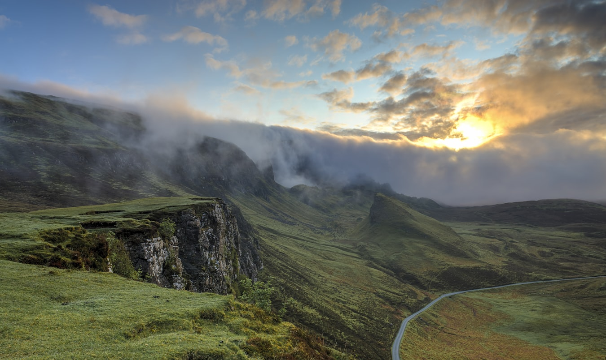

Nature never ceases to amaze us with its spectacular displays and fascinating phenomena. From ethereal light shows in the sky to mysterious moving rocks in the desert, our planet hosts an array of incredible natural wonders that seem almost magical.
1. The Aurora Borealis (Northern Lights)
One of Earth's most mesmerizing displays occurs when charged particles from the sun collide with atoms in our atmosphere. These collisions create the stunning light shows we know as the Northern Lights. The colors we see depend on which atoms are struck and the altitude of the collisions. Green auroras, the most common, come from oxygen atoms about 60 miles up, while rare red auroras occur at heights of up to 200 miles.
2. Bioluminescent Waves
Some beaches around the world glow with an ethereal blue light at night. This magical phenomenon is caused by tiny marine organisms called dinoflagellates that produce light through a chemical reaction when disturbed. These microscopic creatures create one of nature's most enchanting displays, turning waves into flowing ribbons of blue light.
3. The Great Migration
Every year, over two million wildebeest, zebras, and gazelles make a circular journey through the Serengeti-Mara ecosystem. This 1,000-mile trek is the largest terrestrial mammal migration in the world. The animals face numerous challenges, including crossing crocodile-infested rivers and avoiding predators, in their search for fresh grazing lands.
4. Sailing Stones
In Death Valley's Racetrack Playa, rocks weighing up to 700 pounds mysteriously move across the desert floor, leaving long trails behind them. This phenomenon remained unexplained until 2014, when researchers discovered that thin sheets of ice form under specific conditions, allowing winds to push the rocks across the playa's surface.
5. Living Bridges
In the Indian state of Meghalaya, the indigenous Khasi people have developed an ingenious way of crossing rivers. They train the roots of rubber fig trees to grow into natural bridges, some of which can support the weight of 50 people. These living bridges take 15-30 years to become fully functional but can last for centuries.
Conclusion
These remarkable phenomena remind us of the incredible diversity and complexity of our natural world. While science has explained many of these wonders, they continue to inspire awe and remind us of the importance of preserving Earth's unique environments for future generations to witness and study.